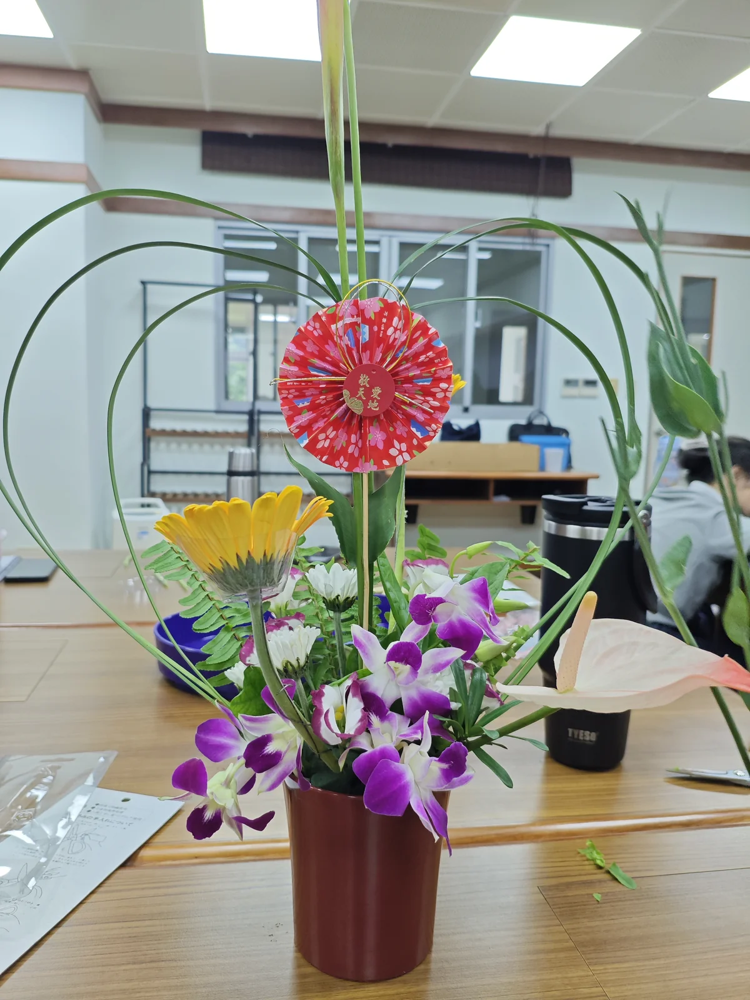

跳至主要內容
經營管理學系
慈濟大學・經營管理學系
首頁
關於本系
系所簡介
願景與使命
系所沿革
課程學習
學習方向
各學年度課程
專業證照門檻
表單與學習資源
師資陣容
認識師長
學生生活
經管系生活
走出校園
職涯發展
最新消息
消息與成果
行事曆
入學資訊
English
EN
經營管理學系
慈濟大學
經管系的我們・參與者提供
暫停背景動態
系所簡介
願景與使命
系所沿革
我們的學習方式
系所教學結合管理、數位商務、永續、團隊合作與職場倫理。
查看系所原始資料
暫停背景動態

查看內容
學生生活
創意實作
查看內容
社區參與
商業與社區
願景與使命
教育的方向
系所沿革
一路走來
×
↑
想找什麼資訊？
搜尋網頁、師資與學習資源